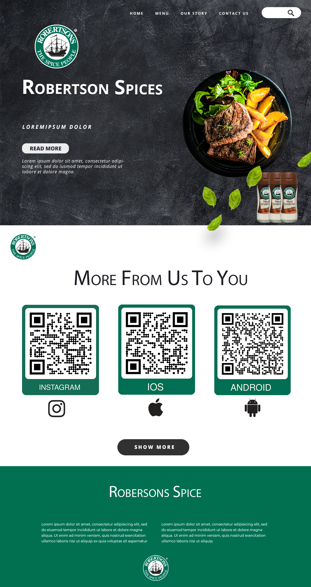

Campaign Objective The objective of this campaign is to create a stronger relationship between Robertsons and their consumers. This will be done through a transmedia campaign that is able to reach different types of audiences through different mediums Throughout the research we were able to analyse Robertsons social media platforms and the their audience engagements. We found 4 types of personas that actively engage with the Brand. For the purpose of this campaign, we noticed that the most engaged and personal audience personas were The Homemaker and The Hobbyist - They are the targets for the campaign.
Big Idea Since Robertsons brand is best experienced within the kitchen or in-person, using different platforms and mediums, we will create a campaign that focuses around the idea of going on a journey or having an adventurer when cooking. Through each element of the campaign we will recreate the identified story arc that is common to adventure stories, Explore-Doubt-Discovery. As the first stage of the Master Your Blend Campaign, the In-store Activation is important for directing consumers towards the other aspects of the campaign. Robertsons will collaborate with their national grocery store partners ( such as Spar, PicknPay, Checkers, Food lovers Market and Jackson’s Farmers Market) to set up an In-store game that will allow consumers to take home a free spice mix.


SPICE MIXER FILTER? Once the consumer uses the QR code theyll be directed to the Robertsons Instagram page where theyll see two filters created for the campaign. The spice mixer filter is another way that consumers can play a game that tests their ability to try something new in their kitchen. Once the user starts recording, the spices shown will randomize and land on three spice combinations for them to try. This filter will also be part of a weekly Spice challenge where users will show the recipes they made and stand a chance to win a select prize. CALL TO ACTION Play with the Spice Mixer Filter to test your kitchen skills Share your unique recipe on Instagram and stand a chance to win the weekly
If the Consumer chooses to follow the other QR Code they’ll be directed to the Master Your Blend microsite where they’ll be able to download the game or explore more of Robertson's recipes. CALL TO ACTION Scan your QR code to download and play Master The Blend.
BackCopyright © 2023 Designed by Arimika